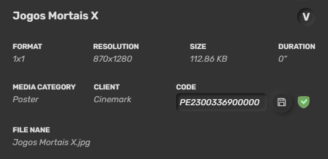
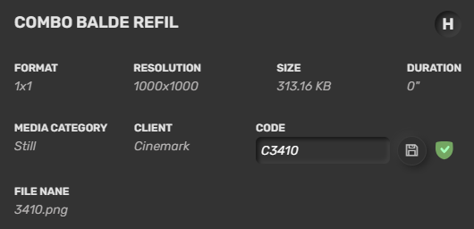
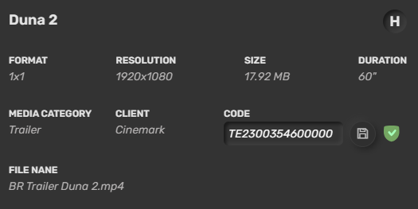

Combo Video: Videos de combos para a versão 1.0 do plugin Combos.
Combos Promocionais: Promoções de snack que possuem brinde. Esse é o mediatype utilizado no GO Operation.
Evento: Mídias para eventos.
Informative: Mídias informativas do cinema.
Inovações (Brasil): Outras promos ou mídias que serão exibidas no snack do cinema.
Institucional: Vídeos institucionais do cinema ou parceiros do cinema.
Layer: Mídias utilizadas para programação do layer.
Lobby Domination: Mídias utilizadas para programação do Lobby Domination.
Menu (Latam): Vídeos de itens de menu do cinema.
Poster: Posters de filmes que serão utilizados pelos plugins Boxoffice, Prices, Postercase e Smartpostercase. Para que o poster seja exibido, é necessário preencher o campo de CODE com o código do filme antecedido pela letra P.

Prices: Banner ou vídeo de rodapé do plugin Prices.
Prime (Brasil): Vídeos de menu dos cinemas Prime e Bistro.
Promo (Latam): Outras promos ou mídias que serão exibidas no snack do cinema.
Showtimes: Banner ou vídeo de rodapé do plugin Showtimes.
Still: Imagem de combo do plugin Combos. Devem ser upadas no sistema em png e são utilizadas nas duas versões do plugin. Para que o still seja exibido seja exibido, é necessário preencher o campo CODE com o código do combo antecedido pela letra C.

Trailer: Trailers que serão exibidos no cinema. Pode ser utilizado em playlist e no plugin Smartpostercase. Para que o trailer seja exibido seja exibido no smartpostercase, é necessário preencher o campo CODE com o código do filme antecedido pela letra T.

Locate
ATM: Roteiros localizados na área dos ATMs do cinema.
BoxOffice: Roteiros localizados na bilheteria do cinema.
Entrance: Roteiros localizados na entrada do cinema.
Lobby: Roteiros localizados no lobby do cinema.
Lounge: Roteiros localizados no lounge do cinema.
Office: Roteiros localizados no escritório do cinema.
Podium: Roteiros localizados no podium do cinema.
Postercase: Roteiros localizados na porta de sala do cinema ou que utilizem Smartpostercase.
Snack: Roteiros localizados no snack do cinema.
Snack Lateral: Roteiros localizados no snack lateral do cinema.
SnackPrimePrincipal: Roteiros localizados no snack prime do cinema. Utilizado em cinemas hibridos que possuem snack regular e prime.